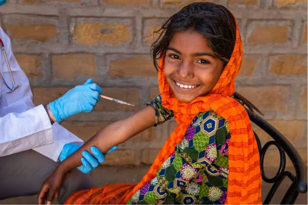

اتصال سلامت فردی به اثر اجتماعی
در آیدا، هر انتخاب فردی میتواند به فرصت واکسیناسیون برای دیگران تبدیل شود و اثر آن در سطح جامعه دیده شود.

پویشی جهت افزایش آگاهی
انتخاب هوشمندانه برای پیشگیری از سرطان
مشارکت اجتماعی بهمنظور دسترسی عادلانه
به واکسیناسیون HPV
آیدا یکی از پروژههای ملی ما در مکسا است
مکسا شبکهای است از پروژههای سلامتمحور، جهت پاسخگویی به نیازهای واقعی خانواده ایرانی.
در این منظومه، آیدا پروژهای است متمرکز بر:
پیشگیری از HPV و کاهش بار سرطان در خانواده ایرانی.
ما در پویش آیدا باور داریم که پیشگیری یکی از قدرتمندترین ابزارها برای مبارزه با سرطان است.
زیرا تنها از یک سرطان میشود با واکسن پیشگیری کرد
در آیدا، هر انتخاب فردی میتواند به فرصت واکسیناسیون برای دیگران تبدیل شود و اثر آن در سطح جامعه دیده شود.
رویکرد مکسا بر دسترسی عادلانه است؛ یعنی خانوادهها در مناطق مختلف کشور بتوانند مسیر پیشگیری را با کیفیت یکسان طی کنند.
تمرکز آیدا بر آموزش، واکسیناسیون و اقدام زودهنگام است تا ریسک سرطانهای مرتبط با HPV پیش از بروز کاهش یابد.
پیام محوری آیدا و مکسا: پیشگیری از HPV یک ضرورت ملی برای آینده خانواده ایرانی است
هدف کمپین، افزایش آگاهی عمومی و گسترش دسترسی عادلانه به واکسیناسیون HPV در سطح کشور است؛ تا بار سرطانهای مرتبط با این ویروس و نگرانی خانوادهها در سالهای آینده کاهش یابد.
بهبود کیفیت زندگی فرزندان ایرانزمین
آگاهی، پیشگیری و دسترسی عادلانه
آیدا نامی است که یادآور آیندهای سالمتر برای فرزندان ایران است. هدف این پویش، افزایش آگاهی عمومی و فراهمسازی دسترسی عادلانه به واکسیناسیون ویروس پاپیلومای انسانی (HPV) است.
هر انتخاب هوشمندانه، یک سهم برای آیدا
تزریق واکسن، به معنای ایمن شدن یک نفر از سرطان نیست؛ بلکه به معنای مشارکت در حرکت اجتماعی برای ایجاد فرصت واکسیناسیون برای دیگران است.
حرکت به سمت پیشگیری از بیماری
نزدیک به ۲۰ سال تجربه در همراهی با بیماران و خانوادهها در مسیر درمان.
نمونه موفق قم با بیش از ۲۲۴٬۰۰۰ نفر غربالگری سرطان سینه.
اولویت هر سیستم جامعهنگر در سلامت؛ آغازی قدرتمند با آیدا به پشتوانه سالها تجربه.
ما نگرانی را با آگاهی، ترس را با اقدام جایگزین میکنیم. جزئیات بیشتر در صفحه چرا مکسا.

به ازای هر ۱۰ نفر که به این پویش میپیوندند، امکان واکسیناسیون رایگان برای ۱ نفر در نقاط کمبرخوردار ایران فراهم میشود.
چهار گام ساده برای مشارکت آگاهانه در پویش
آگاهی درباره HPV و راههای پیشگیری
مشورت با پزشک یا داروساز
اقدام از مسیرهای علمی و معتبر
ثبت خرید و سهیم شدن در واکسیناسیون رایگان

واکسن HPV چهارظرفیتی نوترکیب (Recombinant) برای سویههای خطرناک ۶، ۱۱، ۱۶ و ۱۸ است.
پس از خرید واکسن از داروخانه، با ثبت اطلاعات در این وبسایت، مشارکت شما در پویش آیدا ثبت میشود.
اطلاعات بیشتر درباره گاردیسانپاسخ به پرسشهای رایج درباره HPV و واکسیناسیون
ویروس HPV یکی از شایعترین عفونتهای ویروسی منتقلشونده است که برخی از انواع آن با سرطان دهانه رحم و چند سرطان دیگر مرتبط هستند.
واکسن HPV برای پیشگیری از ابتلا به برخی تیپهای پرخطر HPV طراحی شده است که با سرطان دهانه رحم و برخی سرطانها و زگیل تناسلی مرتبط هستند.
بله. HPV فقط زنان را درگیر نمیکند و واکسیناسیون در مردان نیز در بسیاری از نقاط جهان الزامی میباشد.
اثربخشی واکسن معمولاً پیش از مواجهه با ویروس و در سنین توصیهشده توسط دستورالعملهای علمی حاصل میشود.
در بسیار از موارد قطعاً مزایایی دارد، اما تصمیم نهایی باید با نظر پزشک انجام شود.
مانند هر واکسن دیگری ممکن است عوارض خفیفی مانند درد محل تزریق یا تب خفیف ایجاد شود.
تعداد دوزها بر اساس سن و شرایط فرد متفاوت است. دوز پیشنهاد شده این است: ۹ تا ۱۴ سال — پیش از شروع فعالیت جنسی ۲ دوز؛ امکان تزریق تا ۳۵ سالگی با اثربخشی بالا ۳ دوز؛ تا ۴۵ سال با مشورت پزشک. فاصله زمانی در ماههای صفر، ۲ و ۶.
بله. واکسن HPV ایمنی پایدار و ماندگار ایجاد میکند.
بله. واکسیناسیون جایگزین غربالگری نیست و هر دو اهمیت دارند.
پس از خرید گاردیسان از داروخانه، اطلاعات و عکس محصول را ثبت کنید تا مشارکت شما در پویش آیدا قطعی شود.
ثبت مشارکت